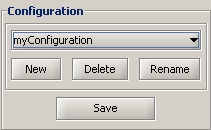
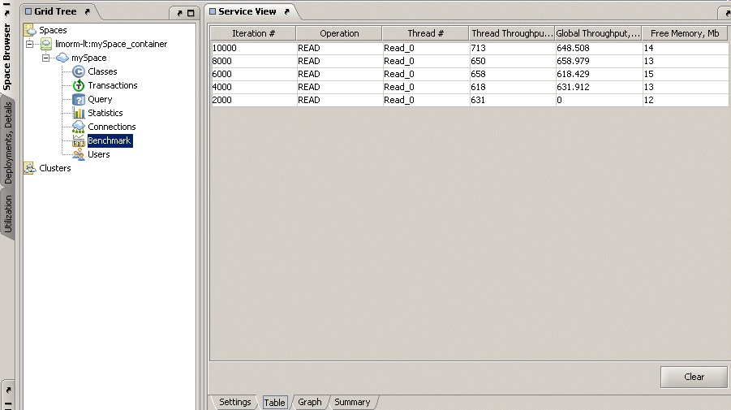
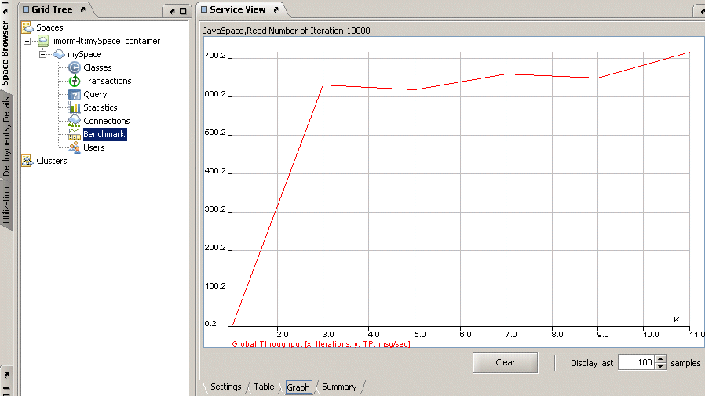

The Benchmark view provides a user interface for benchmarking the space.
The following options are provided:
Specifying object type.
Specifying the JavaSpaces API or Map API operation to perform.
Specifying the number of iterations to perform.
Specifying the sampling rate.
Specifying Object size.
Specifying batch size.
Specifying the number of concurrent threads.
Specifying the transaction type.
Specify parallel operations. For example, running write and read operations in separate threads concurrently.
Specify distributed cache mode.
Export results to a CSV file.
Display results in graph and tabular form.
Benchmark configuration can be saved.
The Benchmark view is comprised of 4 tabs:
Settings tab – allows you to configure the benchmark parameters.
Table tab – allows you to view the benchmark results in tabular format.
Graph tab – allows you to view the benchmark results using graphs.
Summary tab – includes the benchmark results summary.
These options and tabs are described in the sections below.
The Settings tab allows you to configure the benchmark parameters.
It contains the following areas:
Options
Lease
Admin operations
Operations
Transaction
Master-Local
Results Output
Configuration
These areas are detailed in the sections below.
The Benchmark view Options area provides the following options:
Object type – type of object written to the space, possible options: Entry, POJO, JMS, Externalizable, Serializable, FIFO, POJO Externalizable, MetaDataEntry Externalizable, FIFO Externalizable, UID Externalizable. The selected object type is explained in the Description area.
Threads – the number of concurrent threads that run the test. This allows you to run multiple threads that call the selected operation at the same time.
If you define that 1000 Entries be written to the space, and have 5 threads defined as part of the threads box, you will end up with 5000 Entries inside the space.
Iterations – the number of iterations the benchmark calls for the selected operation.
You can allow a read cycle to be conducted several times using the Repeat Read/Get Operation option.
Entry size – the size of the Entry payload in bytes that is written to the space. This option is relevant only for the write and put operations.
Sampling rate – the benchmark provides the average TP reading in the Graph or Table tabs based on the sampling rate. For example, if you choose to write 5000 Entries to the space and the sampling rate is 1000, the results graph and table display 5 sampling points, which reflect the average TP of the write operation for the last sampling period (the last 1000 write operations). When using the Repeat Read/Get Operation option, you can select a sampling rate that is greater than the number of iterations.
Batches – this option allows you to call GigaSpaces batch operations (writeMultiple, takeMultiple, readMultiple). The number specified in this box is the number of batches that are performed in order to complete the number of iterations specified. Specifying 0 as the batch size calls the regular APIs.
The numbers in the Iterations, Sampling rate, and Read/Take timeout boxes are in thousands, and the number in the Entry size box is in bytes.
Checking the Return Lease check defines that operations performed in the space also create a Lease object. You can specify the expiration time of the lease in the Lease Time area, or check the FOREVER Lease check box, which means the lease will not expire unless you remove it from the space.
Checking the Return Lease check box might decrease performance.
Use Clustered Proxy – relevant only when working with clustered spaces. This option defines that all operations in the cluster are performed on a clustered proxy, which is responsible for routing the operation to the relevant member/members. If a clustered proxy is not used, operations are performed directly on the selected cluster member, and not on the whole cluster.
Clean Space - if checked, the target space is cleaned (all objects and templates are removed) prior to the start of the benchmark.
Display Thread TP – this check box instructs the Graph tab to display the throughput of each thread separately. Different threads are represented by different colors.
JavaSpaces operations use an Entry with 2 attributes:
m_counter – java.lang.Long. This stores a running number. This is an indexed attribute. Take and read operations use this attribute for template matching.
m_content – java.lang.Byte\[\]. This stores the payload data.
The following operations can be performed when the JavaSpaces area is selected:
Write – writes objects to the space, according to the number of iterations.
Read – reads objects from the space, according to the number of iterations.
Take – takes objects from the space, according to the number of iterations.
Write and Read – writes and reads objects, according to the number of iterations. For example, defining 20,000 iterations in the Iterations text box writes 2,000 objects to the space, and reads those 2,000 objects from the space.
Write and Take – writes and takes objects, according to the number of iterations. For example, defining 20,000 iterations in the Iterations text box writes 2,000 objects to the space, and takes those 2,000 objects from the space.
Write and Notify – writes objects according to the number of iterations, and registers for notifications on those objects. For example, defining 20,000 iterations in the Iterations text box writes 2,000 objects to the space, sends 2,000 notifications, receives 2,000 notify acknowledgments, and registers for notifications on the written objects.
The referral to objects above means either Entries or POJOs, depending on the specified Object Format.
Map operations put an object with 2 attributes (value object) and a string key into the space.
The following operations can be performed when the Map area is selected:
Put – puts Entries in the space, according to the number of iterations.
Get – gets Entries from the space, according to the number of iterations.
Remove – removes Entries from the space, according to the number of iterations.
Put and Get – puts Entries into the space, and gets Entries from the space, according to the number of iterations. For example, defining 20,000 iterations in the Iterations text box puts 2,000 Entries in the space, and gets those 2,000 Entries from the space.
Put and Remove – puts Entries into the space, and removes Entries from the space. For example, defining 20,000 iterations in the Iterations text box puts 2,000 Entries in the space, and removes those 2,000 Entries from the space.
The Parallel operations check box is relevant only for Write and Read, Write and Take, Put and Get, and Put and Remove operations. When selecting this option, the operations are conducted simultaneously – i.e., a thread is spawned for the write operation, another one for the read operation, and these are executed at the same time, allowing the read thread to read an Entry that has been written by the write thread.
This option is relevant for the read or get operations. Specify the number of times to repeat the operation. This option allows you to benchmark the local cache.
The Transaction area allows you to perform operations under transactions:
None – operations are called without using transactions.
Local – the GigaSpaces Local Transaction Manager is used to create the transaction object with the operations.
Distributed - the Jini Distributed Transaction Manager is used to create the transaction object with the operations. In the Txn Manager URL text box, specify the host name and port in which your Jini Lookup Service is running:
You can choose how many operations are performed before a transaction is committed. Default is Commit every 1 operation, meaning the transaction is committed after every single operation.
For more details on transactions, see the Transactions section in the developer guide.
Distributed cache is relevant when using read or get operations. This option starts a local cache in the Space Browser's VM. When a read or get operation is called, the Entry is first searched for at the local cache. If the Entry is not found at the local cache, it is searched for at the master space and sent back to the browser. Any subsequent read for the Entry is conducted from the local cache.
To save the benchmark sample readings into a file, check the Save results to file check box, and specify a file. This generates a file with the results in tab-separated values.
The benchmark results are printed to an Excel file, which allows you to easily sort your results. To do this, open your printed Excel file, and select *Filter > AutoFilter from the Data menu at the top.
The Configuration area allows you to save specific options you selected in the Service View, instead of having to re-select them every time you run a new benchmark. You can save these options by clicking the New button. In the New Configuration dialog type the name of your choice, for example, myConfiguration:
Press OK to accept and close the dialog, and then click Save. The saved configuration now exists in the drop-down menu:

You can add as many configurations as you like, and select the one you want to use from the drop-down menu. You can also delete or rename existing configurations using the Delete and Rename buttons.
The Table tab allows you to view the benchmark results in tabular format. The table provides the throughput for write, read, or take operations, and the client process memory available during the test period.

To clear the Table tab, click the Clear button.
The Graph tab allows you to view the benchmark results using graphs. The graphs provided show the throughput for write/read/take operations and the client process memory available during the test period.

To clear the Graph tab, click the Clear button.
The Summary tab includes the benchmark results summary.
When running multiple benchmarks, the last benchmark summary is added to the previously displayed summaries.
The Summary tab includes the client system environment – OS, J2SE, memory, network interfaces information, the total time of the benchmark, the average throughput, the number of bytes written/read from the space, and the edition and build of GigaSpaces.
To clear the Summary tab, click the Clear button.
After completing the benchmark settings, click the Start button to invoke the selected operation(s) based on the configuration defined in the Settings tab.
To stop the currently running benchmark, click the Stop button.
The progress bar at the bottom of the Service view displays the current benchmark status.
The benchmark utility provides a good tool for running performance benchmarks on the cache in various scenarios. This program performs a loop of write/put and read/get, or take/remove operations from a space, according to a different set of parameters. The result is the average time it took to perform the operations. You can define a sampling rate to allow you to track the intermediate performance while the benchmark example is running. You may also dump the results into a file to be converted into graphs and analyzed using a spreadsheet and analysis tools.
For more details, see the Utility page.